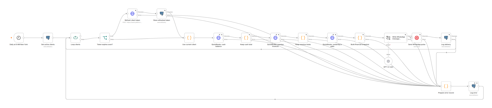
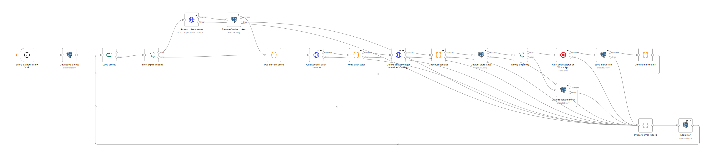
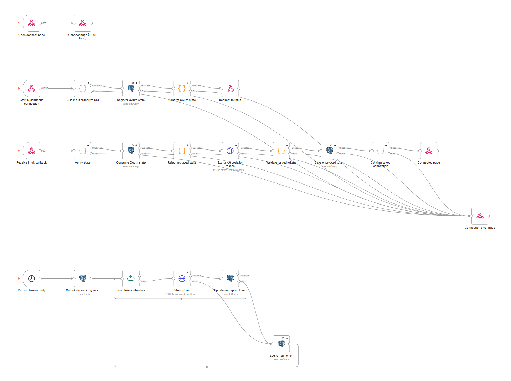
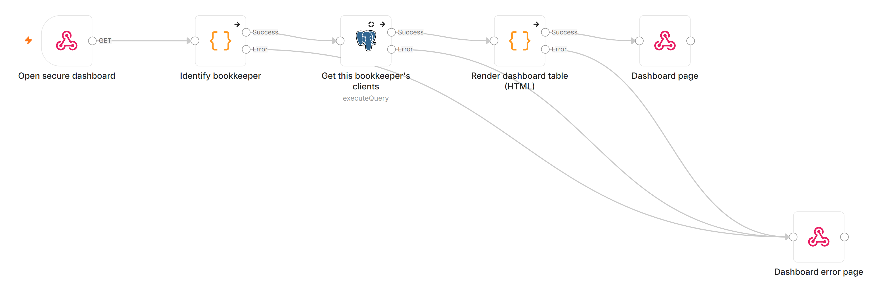

FynnChat on n8n
Four workflows, 67 nodes, built on our self-hosted n8n to match your brief. Every workflow is complete; none has credentials attached and none has been run against live accounts yet. Tap any diagram to open it full size.
Built
- Daily Pulse
- Urgent Alerts
- QuickBooks Connect (OAuth 2.0)
- Bookkeeper Dashboard
Still needed
- Your QuickBooks, Twilio, OpenAI and PostgreSQL credentials
- Test run with two real client companies
- Meta approval of the two WhatsApp templates
- Deployment on your DigitalOcean server
Daily Pulse · 8 AM New York
Loops through active clients, pulls cash, overdue invoices and yesterday's sales from QuickBooks, writes the message in English or Spanish with GPT-4.1 mini, sends it on WhatsApp and logs every delivery. Expiring tokens are refreshed first; a failed client is logged and the loop continues.

Urgent Alerts · every 6 hours
Checks cash below $2,000 and invoices more than 30 days overdue. Alerts the bookkeeper on WhatsApp only when a condition is newly triggered, and clears resolved alerts so they can fire again later.

QuickBooks Connect · OAuth 2.0
The /connect page and Intuit OAuth flow with a signed, single-use state, token exchange and validation, tokens saved encrypted in PostgreSQL, and a daily token refresh with error logging.

Bookkeeper Dashboard
Login-protected /dashboard. Each bookkeeper sees only their own clients: cash today, overdue invoices, last message sent and delivery status.
